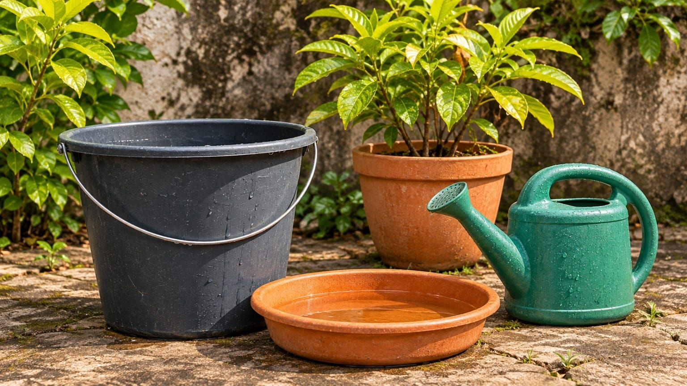

← Voltar
Guia Aedes
Guia Aedes
O que você quer saber?

Evite criadouros no dia a dia
Saiba como cuidar dos recipientes que podem acumular água.
Ver cuidados com recipientesExplore o guia
- Identificar possíveis focos Aprenda a reconhecer locais que acumulam água.
- Cuidados com os sintomas Saiba quais sinais merecem atenção e como agir.
- Evitar a automedicação Entenda por que evitar remédios por conta própria.
- Receber o agente Entenda a importância da visita e como colaborar.
- Repelentes Conheça as formas de uso e os cuidados.